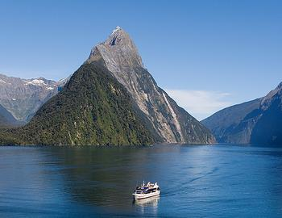

If you’re looking for family fun, adrenaline-fuelled adventure, a skiing break, or romance and relaxation, Queenstown has the ideal mix of activities and attractions to keep you entertained on your visit.
World-renowned for its adventure, Queenstown is home to a huge choice of adrenaline based activities including jetboating, bungy jumping, white water rafting and skydiving – all guaranteed to get your blood pumping! The region also has a world-class ski and snowboard season from June to October.
If you’re looking for a slightly slower pace there’s plenty of hiking and biking trails, guided tours, boat cruises, scenic flights or spa and wellness centres.
And the great thing about Queenstown is that most activities can be accessed all year round.
Start planning your Queenstown holiday below, the possibilities are endless.
Take to the skies above Queenstown with a scenic flight or an adventurous air activity!
Queenstown’s stunning scenery is ideal for helicopter flights, plane flights, private heli-tours and hang gliding. Those with an appetite for adventure might prefer an aerobatic flight, parapenting or sky diving!
You'll enjoy incredible aerial views of the lakes, mountains and town as you soar, fly, float or fall from the sky above Queenstown.
Take off with one of the Queenstown flight or air activity options below.
Queenstown
Tandem hang gliding or paragliding is one of the best adventure activities you can experience while visiting Queenstown.
We provide flights from Coronet Peak located just 20 minutes drive from the centre of town.
Queenstown
We leave the beautiful blue colours of Lake Wakatipu and Queenstown and fly west towards the head of Lake Wakatipu. At the head of the lake we fly past jaw dropping ice shelves and continue on to Milford Sound via Fiordland National park. We will fly past numerous hidden valleys, waterfalls and alpine lakes before we land at Milford Sound Airport.

Surrounded by beautiful lakes, rivers and fiords, Queenstown is an ideal destination for all your favourite water activities.
From leisurely lake cruises to adrenaline-pumping jetboat rides, Queenstown’s aquatic adventures are seemingly endless.
Browse the options below for the best lake & river adventures in Queenstown, New Zealand!
Queenstown
New Zealand's largest white water rafting operator offers rafting trips on the Shotover and Kawarau Rivers. Operates year round. No experience necessary.
Queenstown
Meet Hydro Attack – The ultimate blend of shark and machine.
Operating from our berth in central Queenstown we’ll take you on an adrenaline-packed tour of stunning Lake Wakatipu.
Queenstown is a walking and hiking paradise.
The region’s geography, flora and fauna are incredibly diverse and can be explored via a range of stunning hiking trails. A number of short scenic walks start right from Queenstown’s town centre whilst the iconic Fiordland and Mount Aspiring national parks are within easy reach, and home to the Routeburn and Greenstone trails.
Queenstown offers a wide range of walking tracks and trails for all levels of fitness. Whether you prefer a short local, day long or even a multi-day walking adventure, a guided hike or an independent walking trip, there is a Queenstown walking or hiking option for you below.
Queenstown
Our top-of-the-line high-tech, slimline snow shoes enable you to walk across unbroken snow, opening up huge possibilities for wilderness exploration. If you can walk, you can snow shoe -- it’s that easy. Experience the serenity of the spectacular 'back country' around Queenstown this winter, ‘floating’ across the snow as you enjoy this unspoiled Winter Wonderland experience.
Queenstown
Everything you need if you are looking at walking the Great Walks! Kiwi Discovery provide everything for the independant tramper wanting to walk the Milford, Routeburn or Kepler Track: track transport, rental equipment, maps, advice. Also available a cruise at Milford Sound before or after the track. All you need to do is book your huts with DOC, Kiwi Discovery do the rest!